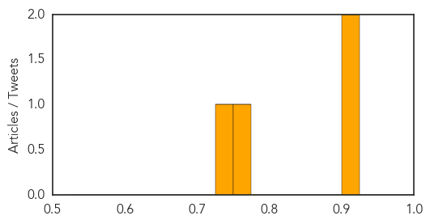
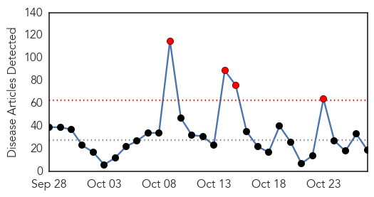
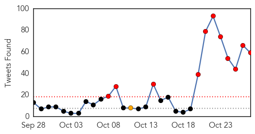

Hepatitis
30-Day Web Trend
4 alerts, 6 warnings

30-Day Twitter Trend
0 alerts, 0 warnings

Article Locations

Article Confidences
Top Articles:
- 0.920
- Doctors say all baby boomers should be tested for Hep C
- 0.914
- Why vaccinated people are so unhealthy: They're unknowingly sharing dirty syringes like drug users
- 0.775
- Seychelles readies to expand immunization programme: charity and telecom organisations join the health ministry to introduce Rotavirus vaccines in 2016
- 0.744
- 2 patients who tested positive as revealed on Oct 23 confirmed part of affected hepatitis C cluster, news, Health News, AsiaOne YourHealth
Top Tweets:
-
No tweets found for Oct 27, 2015
Ebola
30-Day Web Trend
4 alerts, 0 warnings

30-Day Twitter Trend
15 alerts, 0 warnings

Article Locations

Article Confidences

Top Articles:
- 1.000
- Mystery deaths in Sierra Leone spread fear of Ebola relapses
- 1.000
- Scientists Calculate Risk of Ebola Spreading to France, Britain
- 0.998
- Would you volunteer to take part in THIS medical trial? You'll be paid £750 but there's one catch
- 0.998
- Nigeria is set to establish an Ebola survival clinic
- 0.993
- Ebola Survivors Still Have Myriad Problems
- 0.977
- Ebola deployment by military crucial but carries risks: report
- 0.976
- Sick British Ebola nurse 'much better'
- 0.969
- This Ebola-Type Fever is Named After a Town in Germany
- 0.944
- Without immunization, Texas could see a return of the plagues
- 0.937
- Liberian VP visits Minnesota, asks for more help in Ebola recovery
- 0.933
- IOM Guinea Participates in Public Health Surveillance of Village Hit by Recent Ebola Death - Guinea
- 0.919
- St. Lucia News From The Voice St. Lucia
- 0.854
- Veep Boakai Meets with Diaspora in Minnesota
- 0.853
- S&Ds call on the EU for concrete measures to help reconstruct Ebola-affected countries
- 0.846
- Ebola Orphans Get Help Reacclimating, Raising Siblings
- 0.842
- Veep Boakai Holds Discussions with Diaspora in Minnesota
- 0.574
- Extinguishing Ebola: Greeley Central graduate plays a small role in helping to snuff the outbreak of
- 0.565
- Ebola orphans face life of hardship as education and jobs remain out of reach
- 0.501
- Ghana’s Frontline Border Officials Improve Ebola Preparedness - Ghana
Top Tweets:
- 0.997
- IOM Guinea conducts public health surveillance training following Ebola death - https://t.co/jFqUuFIqdS ebola
- 0.995
- ebola - https://t.co/rhXHn9uL3F ebola
- 0.995
- eBoLa - https://t.co/hf7qgmfM57 ebola
- 0.995
- Ils sont malades d'Ebola - https://t.co/ReY3HdTygJ ebola
- 0.993
- United States nurse quarantined over ebola fears sues - https://t.co/zRJA8vOX0L ebola
- 0.993
- United States nurse quarantined over ebola fears sues - https://t.co/Ekmwl6s1vv ebola
- 0.993
- Mystery deaths in Sierra Leone spread fear of Ebola relapses - https://t.co/pAOOAOvdin ebola
- 0.993
- Ebola La - https://t.co/1OlAT5yNZ3 ebola
- 0.992
- The Sierra Leone village where every orphan is a victim of the ebola epidemic - https://t.co/mQMuQtsrig ebola
- 0.992
- EBOLA IN SCOTLAND Ebola Case Confirmed in Glasgow Hospital - https://t.co/4vkeCgLNTG ebola
- 0.992
- A Notable Honor for Ebola Response Team as It Planned and Prepared for the Ebola Virus - https://t.co/sXylElAvPR ebola
- 0.988
- Sierra Leone News: Stigmatization of Ebola survivors is - https://t.co/buIVkeuSN5 ebola
- 0.988
- MERS, Ebola, bird flu: Science's big missed opportunities - https://t.co/Nuj9JoC8rm ebola
- 0.988
- MERS, Ebola, bird flu: Science's big missed opportunities - https://t.co/9cyN605JSr ebola
- 0.988
- MERS, Ebola, bird flu: Science's big missed opportunities - https://t.co/9L6hUXXJDW ebola
- 0.985
- CRMC Ready to Handle Ebola Outbreak - https://t.co/D71AcOOa4O ebola
- 0.984
- Pestilence : CDC warns Deadly Ebola Outbreak is Spiraling out of Control in Africa - https://t.co/qFnHpabIjt ebola
- 0.983
- Ebola Overview - https://t.co/7o2GLEkjEG ebola
- 0.982
- Fergie Lalala Parody Ebola Mp3 Download - https://t.co/M2mhbRar85 ebola
- 0.978
- Hanford High alum to talk on Ebola outbreak work - https://t.co/gCywm46wDx ebola
- 0.975
- Global Health Lecture: Learning from Ebola - https://t.co/7ZqVGJoNJd ebola
- 0.972
- Not carrying out studies during MERS, Ebola, bird flu are science's big missed opportunities - https://t.co/FVoFqxwS7G ebola
- 0.971
- Atlanta in the Thick of the Fight to Stop the Ebola Virus - https://t.co/lbJm0F3si5 ebola
- 0.968
- The Londoners running for charity in Sierra Leone to help children with Ebola - https://t.co/NKui3uYkx0 ebola
- 0.963
- Dr. David Samadi on Ebola Vaccine - https://t.co/W0NOrnAF8u ebola
- 0.954
- West African Man Suing North Jersey Pharmacy, Hospital for 'Invasive' Ebola Testing - https://t.co/g2GEjDfoYf ebola
- 0.954
- Fighting Ebola in Sierra Leone: a view from the frontline - https://t.co/X4hKLazDRj ebola
- 0.949
- Sierra Leone opens schools for pregnant girls after spike amid Ebola - https://t.co/WGfJxUCSi4 ebola
- 0.945
- This Ebola-Type Fever is Named After a Town in Germany - Gizmodo https://t.co/YirxM7L7rx ebola EVD
- 0.938
- Ebola Response Team is Honored With Patient Safety Award - Infection Control Today https://t.co/uhSJAhZHj8 ebola EVD
- 0.935
- AfDB Approves US$33.3 Million Ebola Recovery Fund - https://t.co/qFmBOK5vg7 ebola
- 0.934
- This Ebola-Type Fever is Named After a Town in Germany - https://t.co/2xnsPUVQXv ebola
- 0.934
- Ebola And Beyond: How Prepared Is Boston For The Next Outbreak? - WGBH NEWS https://t.co/ZpUZNLl99O ebola EVD
- 0.933
- The last days of this Ebola outbreak are as much about access to information ... - Quartz https://t.co/grsLVEUl6y ebola EVD
- 0.933
- The last days of this Ebola outbreak are as much about access to information ... - Quartz https://t.co/VNDl53sqNw ebola EVD
- 0.932
- Ebola vaccine trial seeks volunteers - https://t.co/jDEYKzVBse ebola
- 0.927
- Ebola Survivors Still Have Myriad Problems - https://t.co/MEw8ZSP34b ebola
- 0.922
- Bacteria suspected in 4 hospital deaths - https://t.co/UDDZwYtTHH ebola
- 0.910
- Ebola vaccine trial seeks volunteers - AOL Money UK https://t.co/GaDCvCvz8Y ebola EVD
- 0.908
- Ebola Orphans Get Help Reacclimating, Raising Siblings - https://t.co/Hw3LnyvKY4 ebola
- 0.900
- Defense: Supect in ATM worker slaying believed victim was spreading Ebola - https://t.co/rvh7YK9fOm ebola
- 0.895
- Global Preparedness for Pandemics Symposium: Lessons from Ebola - https://t.co/XCulz3eTgg ebola
- 0.892
- Ebola Orphans Get Help Reacclimating, Raising Siblings - Huffington Post https://t.co/AQzddSvkky ebola EVD
- 0.889
- Ghana's frontline border training facilitates Ebola preparedness - https://t.co/VAHRHL0g36 ebola
- 0.875
- Ebola deployment by military crucial but carries risks: report - https://t.co/ELF0loRpmk ebola
- 0.872
- Watch: Midair refueling and fighting Ebola - all in a day's work - https://t.co/Wq5Vp0SKyU ebola
- 0.854
- Ritcorp Aids Street Child to Support Ebola Orphans - https://t.co/mSldlAiCC4 ebola
- 0.847
- Hocking County Health Department hosts ebola tabletop exercise - https://t.co/7J2Pfcnxg4 ebola
- 0.836
- The environmental origins of Ebola must be tackled - Irish Times https://t.co/BK72NQ74vS ebola EVD
- 0.818
- Ebola deployment by military crucial but carries risks: report - CBC.ca https://t.co/u3y32l5oQl ebola EVD
Showing top 50 tweets...